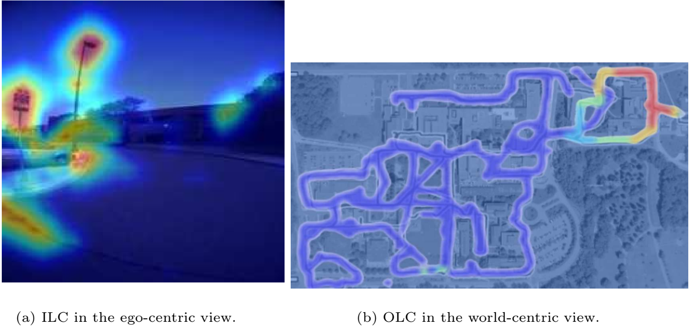
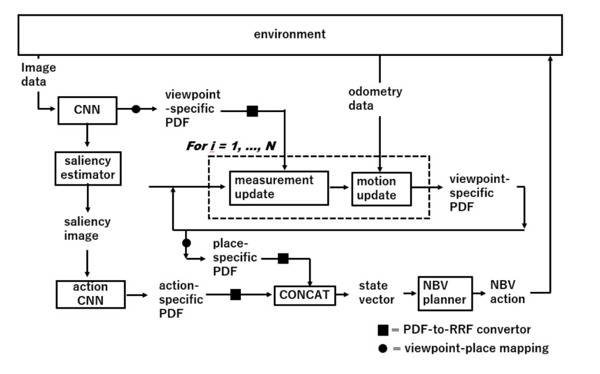

Active Domain-Invariant Self-Localization Using Ego-Centric and World-Centric Maps ⋆
Kanya Kurauchi, Kanji Tanaka, Ryogo Yamamoto, and Mitsuki Yoshida
Keywords
Visual robot place recognition, Domain-invariant next-best-view planner, Transferring convnet features
Abstract
The training of a next-best-view (NBV) planner for visual place recognition (VPR) is a fundamentally important task
in autonomous robot navigation, for which a typical approach is the use of visual experi- ences that are collected in
the target domain as training data. However, the collection of a wide variety of visual experiences in everyday nav- igation is
costly and prohibitive for real-time robotic applications. We address this issue by employing a novel domain-invariant NBV planner.
A standard VPR subsystem based on a convolutional neural network (CNN) is assumed to be available, and its domain-invariant state recognition
ability is proposed to be transferred to train the domain-invariant NBV planner. Specifically, we divide the visual cues that are available
from the CNN model into two types: the output layer cue (OLC) and intermediate layer cue (ILC). The OLC is available at the output layer of the
CNN model and aims to estimate the state of the robot (e.g., the robot viewpoint) with respect to the world-centric view coordinate sys- tem. The ILC
is available within the middle layers of the CNN model as a high-level description of the visual content (e.g., a saliency image) with respect to the
ego-centric view. In our framework, the ILC and OLC are mapped to a state vector and subsequently used to train a multiview NBV planner via deep reinforcement learning.
Experiments using the public NCLT dataset validate the effectiveness of the proposed method.
Related document
BibTeX
@inproceedings{DBLP:conf/cvmi/Kurauchi0YY22,
author = {Kanya Kurauchi and
Kanji Tanaka and
Ryogo Yamamoto and
Mitsuki Yoshida},
editor = {Massimo Tistarelli and
Shiv Ram Dubey and
Satish Kumar Singh and
Xiaoyi Jiang},
title = {Active Domain-Invariant Self-localization Using Ego-Centric and World-Centric
Maps},
booktitle = {Computer Vision and Machine Intelligence - Proceedings of {CVMI} 2022,
{IIIT} Allahabad, India, August 2022},
series = {Lecture Notes in Networks and Systems},
volume = {586},
pages = {475--487},
publisher = {Springer},
year = {2022},
url = {https://doi.org/10.1007/978-981-19-7867-8\_38},
doi = {10.1007/978-981-19-7867-8\_38},
timestamp = {Tue, 05 Dec 2023 17:22:55 +0100},
biburl = {https://dblp.org/rec/conf/cvmi/Kurauchi0YY22.bib},
bibsource = {dblp computer science bibliography, https://dblp.org}
}
図表・写真

Fig. 1. The training of a next-best-view (NBV) planner for visual robot place recogni-
tion (VPR) is fundamentally important for autonomous robot navigation. In this study,
instead of the common path of training from visual experiences, we exploit a standard
single-view VPR model using a deep CNN as the source of training data. Specifically,
we divide the visual cues that are available from the CNN model into two types: the
OLC and ILC, and fuse the OLC and ILC into a new state vector to reformulate the
NBV planning as a domain-invariant task. Heat maps are overlaid on the images to
visualize the OLC/ILC values.

a